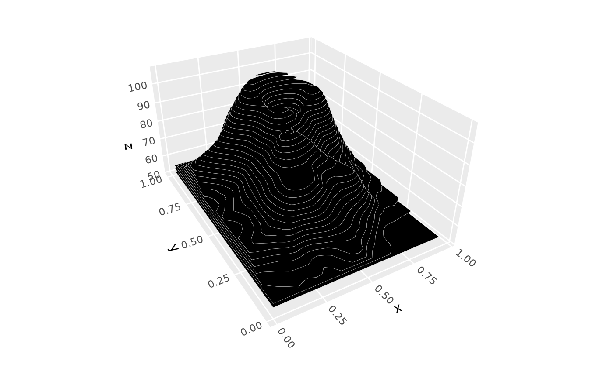
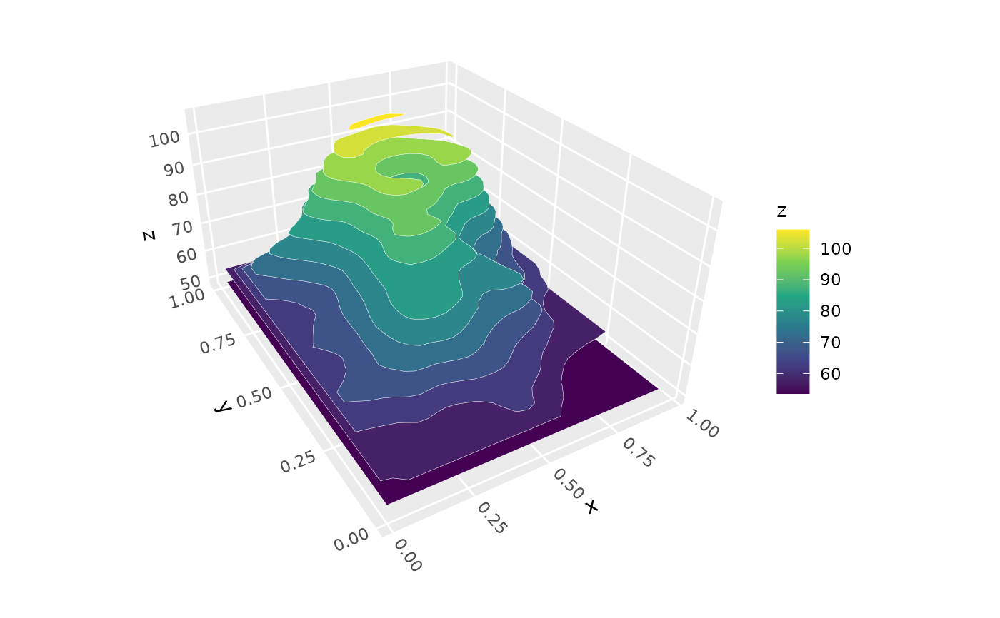
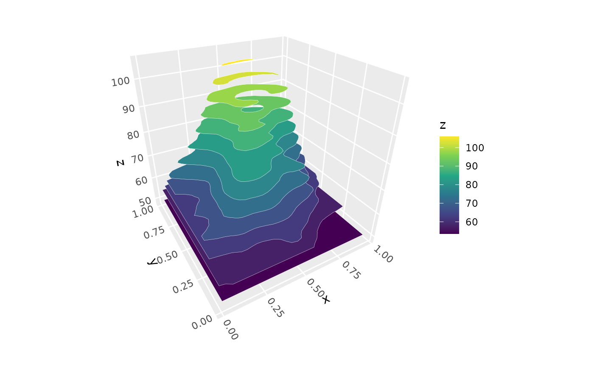
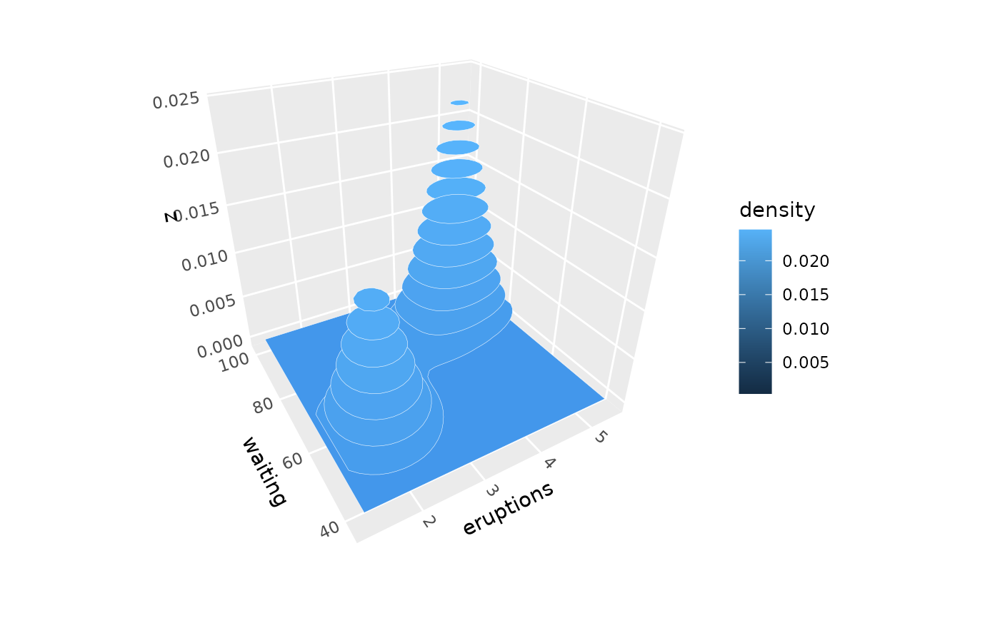
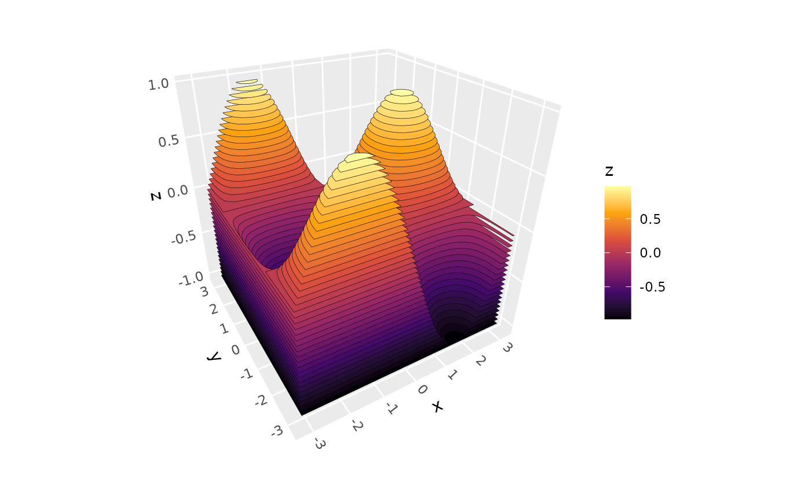

Renders a surface as stacked horizontal contour bands, creating a "layer cake" visualization. Each contour band is a filled polygon placed at its corresponding z-level, making it easy to read off elevation values.
Usage
geom_contour_3d(
mapping = NULL,
data = NULL,
stat = "surface_3d",
position = "identity",
...,
bins = 20,
binwidth = NULL,
breaks = NULL,
cull_backfaces = FALSE,
sort_method = "pairwise",
scale_depth = TRUE,
force_convex = FALSE,
light = NULL,
na.rm = FALSE,
show.legend = NA,
inherit.aes = TRUE
)
stat_contour_3d(
mapping = NULL,
data = NULL,
geom = "contour_3d",
position = "identity",
...,
bins = 20,
binwidth = NULL,
breaks = NULL,
cull_backfaces = FALSE,
sort_method = "pairwise",
scale_depth = TRUE,
force_convex = FALSE,
light = NULL,
na.rm = FALSE,
show.legend = NA,
inherit.aes = TRUE
)Arguments
- mapping
Set of aesthetic mappings created by
aes().- data
Point grid data with x, y, z coordinates.
- stat
Statistical transformation. Defaults to
stat_surface_3d().- position
Position adjustment, defaults to "identity".
- ...
Other arguments passed to the layer.
- bins
Number of contour levels. Default is 20. Ignored if
breaksorbinwidthis provided.- binwidth
Width of each contour band. Overrides
binsif provided.- breaks
Numeric vector specifying exact contour break points. Overrides both
binsandbinwidthif provided.- cull_backfaces, sort_method, force_convex, scale_depth
Advanced polygon rendering parameters. See polygon_rendering for details.
- light
A lighting specification object created by
light(),"none"to disable lighting, orNULLto inherit plot-level lighting specs from the coord. Specify plot-level lighting incoord_3d()and layer-specific lighting ingeom_*3d()functions.- na.rm
If
FALSE, missing values are removed.- show.legend
Logical indicating whether this layer should be included in legends.
- inherit.aes
If
FALSE, overrides the default aesthetics.
Details
This geom takes point grid data (like that produced by stat_surface_3d(),
stat_function_3d(), stat_smooth_3d(), or stat_density_3d()) and converts
it to filled contour polygons using the isoband package.
Aesthetics
geom_contour_3d() requires:
- x, y, z
Point coordinates forming a regular grid
And understands these additional aesthetics:
- fill
Band fill color. For automatic coloring by elevation, use
aes(fill = after_stat(z)). Default is "grey60".- colour
Band border color (default: "grey30")
- alpha
Transparency
- linewidth
Border width (default: 0.1)
- linetype
Border line type
Computed variables
Each contour band is placed at its corresponding z-level (the upper boundary
of the band). To color by elevation, use aes(fill = after_stat(z)).
See also
geom_surface_3d() for continuous surface rendering,
geom_ridgeline_3d() for cross-sectional ridgeline rendering,
stat_function_3d() for mathematical function surfaces,
stat_smooth_3d() for fitted model surfaces,
coord_3d() for 3D coordinate systems,
ggplot2::geom_contour_filled() for the 2D equivalent.
Examples
# Basic usage with volcano data
ggplot(mountain, aes(x, y, z)) +
geom_contour_3d(color = "white", fill = "black") +
coord_3d(light = "none", ratio = c(1.5, 2, 1))

# Map fill to elevation and customize number of levels
ggplot(mountain, aes(x, y, z, fill = after_stat(z))) +
geom_contour_3d(bins = 12, color = "white") +
scale_fill_viridis_c() +
coord_3d(light = "none", ratio = c(1.5, 2, 1))

# Specify exact breaks
ggplot(mountain, aes(x, y, z, fill = after_stat(z))) +
geom_contour_3d(breaks = seq(0, 200, by = 5)) +
scale_fill_viridis_c() +
coord_3d(light = "none")

# With stat_density_3d
ggplot(faithful, aes(eruptions, waiting)) +
stat_density_3d(geom = "contour_3d") +
coord_3d()

# With stat_function_3d
ggplot() +
stat_function_3d(
fun = function(x, y) sin(x) * cos(y),
xlim = c(-pi, pi), ylim = c(-pi, pi),
geom = "contour_3d",
bins = 50, color = "black"
) +
scale_fill_viridis_c(option = "B") +
coord_3d(light = "none")
